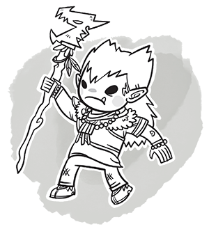

Errata du Player's Handbook D&D 5
Traduction de l'errata officiel du PH (3.0) du 13/12/2021.
Création de personnage
Weapons [Armes] (p. 14). À la puce au sujet des armes à distance, remplacer "A weapon that has ..." par "A melee weapon that has ...".
Beyond 1st Level [Au-delà du niveau 1] (p. 15). À la première phrase du troisième paragraphe, remplacer "add the total" par "add the total (minimum of 1)".
Races
[New] Racial Traits [Traits raciaux] (p. 17, 20, 23, 28, 31, 34, 36, 39, 41, 43). Les sections "Alignement" sont éliminées.
Dwarven Combat Training [Entraînement aux armes naines] (p. 20). Remplacer "throwing hammer" par "light hammer".
[New] Dark Elf (Drow) [Elfe noir (drow)] (p.24). Les deux premiers paragraphes ont été réécrits : "As a drow, you are infused with the magic of the Underdark, an underground realm of wonders and horrors rarely seen on the surface above. You are at home in shadows and, thanks to your innate magic, learn to conjure forth both light and darkness. Your kin tend to have stark white hair and grayish skin of many hues.
The cult of the god Lolth, Queen of Spiders, has corrupted some of the oldest drow cities, especially in the worlds of Oerth and Toril. Eberron, Krynn, and other realms have escaped the cult’s influence—for now. Wherever the cult lurks, drow heroes stand on the front lines in the war against it, seeking to sunder Lolth’s web".
Drow Magic [Magie drow] (p. 24). Remplacer "once per day" par "when you finish a long rest".
[New] The Darkness of the Drow (p. 24). L'encadré est supprimé.
Infernal Legacy [Ascendance infernale] (p. 43). Remplacer "once per day" par "when you finish a long rest".
Barde
Spell Slots [Emplacements de sorts] (p. 53). Dans la première phrase, "your spells" devient "your bard spells".
Song of Rest [Chant reposant] (p. 54). La deuxième phrase doit dire : "If you or any friendly creatures who can hear your performance regain hit points at the end of the short rest by spending one or more Hit Dice, each of those creatures regains an extra 1d6 hit points".
Magical Secrets [Secrets magiques] (p. 54). Dans le premier et le troisième paragraphe, remplacer "any class" par "any classes".
Clerc
Preparing and Casting Spells [Préparer et lancer des sorts] (p. 58). Dans la première phrase, "your spells" devient "your cleric spells".
[New] Bonus Cantrip [Sort mineur supplémentaire] (p. 61). Ajouter le texte suivant à la fin du paragraphe : "This cantrip doesn’t count against the number of cleric cantrips you know".
[New] Acolyte of Nature [Acolyte de la nature] (p. 62). Ajouter le texte suivant après la première phrase : "This cantrip counts as a cleric cantrip for you, but it doesn’t count against the number of cleric cantrips you know".
[New] Avatar of Battle [Avatar de bataille] (p. 63). Remplacer "nonmagical weapons” par "nonmagical attacks".
Druide
Preparing and Casting Spells [Préparer et lancer des sorts] (p. 66). Dans la première phrase, "your spells" devient "your druid spells".
[New] Bonus Cantrip [Sort mineur supplémentaire] (p. 68). Ajouter le texte suivant à la fin du paragraphe : "This cantrip doesn’t count against the number of druid cantrips you know".
Guerrier
Feinting Attack [Feinte] (p. 74). La deuxième phrase doit dire : "You have advantage on your next attack roll against that creature this turn".
Spell Slots [Emplacements de sorts] (p. 75). Dans la première phrase, "your spells" devient "your wizard spells".
Spells Known of 1st-Level and Higher [Sorts connus de niveau 1 et supérieur] (p. 75). La dernière phrase se termine maintenant par : "... unless you're replacing the spell you gained at 3rd, 8th, 14th, or 20th level from any school of magic".
Moine
Deflect Missiles [Parade de projectiles] (p. 78). La dernière phrase se termine maintenant par : "... regardless of your weapon proficiencies, and the missile counts as a monk weapon for the attack".
Elemental Attunement [Lien élémentaire] (p. 81). Dans la première phrase, remplacer "nearby" par "within 30 feet of you".
Eternal Mountain Defense [Défense de la montagne éternelle] (p. 81). Remplacer "11th Level Required" par "17th Level Required".
Water Whip [Fouet d'eau] (p. 81). Remplacer "A bonus action" par "an action".
Paladin
Preparing and Casting Spells [Préparer et lancer des sorts] (p. 84). Dans la première phrase, "your spells" devient "your paladin spells".
Divine Smite [Châtiment divin] (p. 85). Remplacer "Paladin spell slot" par "spell slot".
Ajouter également le texte suivant à la fin de la dernière phrase : ", to a maximum of 6d8".
Improved Divine Smite [Châtiment divin amélioré] (p. 85). Effacer la dernière phrase.
Rôdeur
Spell Slots [Emplacements de sorts] (p. 91). Dans la première phrase, "your spells" devient "your ranger spells".
Ranger's Companion [Compagnon du rôdeur] (p. 93). Ajouter le texte suivant à la fin du premier paragraphe : "Like any creature, the beast can spend Hit Dice during a short rest".
Ajouter également un nouveau troisième paragraphe : "If you are incapacitated or absent, the beast acts on its own, focusing on protecting you and itself. The beast never requires your command to use its reaction, such as when making an opportunity attack".
Dans la deuxième phrase du deuxième paragraphe, effacer la phrase qui commence par "though it doesn't take ...".
Dans la troisième phrase du deuxième paragraphe, effacer "Dodge," et ajouter après cette phrase celle qui suit : "If you don't issue a command, the beast takes the Dodge action".
Exceptional Training [Entraînement exceptionnel] (p. 93). Effacer "Dodge," et ajouter la phrase suivante : "In addition, the beast's attacks now count as magical for the purpose of overcoming resistance and immunity to nonmagical attacks and damage".
Bestial Fury [Fureur bestiale] (p. 93). Cette section doit dire: "Starting at 11th level, when you command your beast companion to take the Attack action, the beast can make two attacks, or it can take the Multiattack action if it has that action".
Roublard
Spell Slots [Emplacements de sorts] (p. 98). Dans la première phrase, "your spells" devient "your wizard spells".
Spells Known of 1st-Level and Higher [Sorts connus de niveau 1 et supérieur] (p. 98). La dernière phrase se termine maintenant par : "... unless you're replacing the spell you gained at 3rd, 8th, 14th, or 20th level from any school of magic".
Ensorceleur
Spell Slots [Emplacements de sorts] (p. 101). Dans la première phrase, "your spells" devient "your sorcerer spells".
Flexible Casting [Flexibilité des sorts] (p. 101). Cette section se termine maintenant par la phrase : "Any spell slot you create with this feature vanishes when you finish a long rest".
Twinned Spell [Sort jumeau] (p. 102). Ajouter un nouveau paragraphe à la fin de cette section : "To be eligible, a spell must be incapable of targeting more than one creature at the spell's current level. For example, magic missile and scorching ray aren't eligible, but ray of frost and chromatic orb are”.
Elemental Affinity [Affinité élémentaire] (p. 102). La première phrase se termine maintenant par : "... draconic ancestry, you can add your Charisma modifier to one damage roll of that spell".
Wild Magic Surge [Sursaut de magie sauvage] (p. 103). À partir de la deuxième phrase, cette section doit dire : "Once per turn, the DM can have you roll a d20 immediately after you cast a sorcerer spell of 1st level or higher. If you roll a 1, roll on the Wild Magic Surge table to create a magical effect. If that effect is a spell, it is too wild to be affected by your Metamagic, and if it normally requires concentration, it doesn't require concentration in this case; the spell lasts for its full duration".
Occultiste
Quick Build [Création rapide] (p. 106). Remplacer "ray of sickness" par "charm person".
Spell Slots [Emplacements de sorts] (p. 107). Ajouter le texte suivant à la première phrase : "to cast your warlock spells of 1st through 5th level".
De plus, remplacer "thunderwave" par "witch bolt".
Pact of the Chain [Pacte de la chaîne] (p. 107). La dernière phrase se termine maintenant par : "... make one attack with its reaction".
Pact of the Tome [Pacte du grimoire] (p. 108). À partir de la deuxième phrase, le premier paragraphe doit dire : "When you gain this feature, choose three cantrips from any class's spell list (the three needn't be from the same list). While the book is on your person, you can cast those cantrips at will. They don't count against your number of cantrips known. If they don't appear on the warlock spell list, they are nonetheless warlock spells for you".
Eldritch Invocations [Manifestations occultes] (p. 110). Ajouter la phrase suivante à la fin du premier paragraphe : "A level prerequisite refers to your level in this class".
Book of Ancient Secrets [Livre des secrets anciens] (p. 110). La deuxième phrase doit dire : "Choose two 1st-level spells that have the ritual tag from any class's spell list (the two needn't be from the same list)".
Magicien
Your Spellbook [Votre grimoire] (p. 114). Sous "Copying a Spell into the Book", la première phrase doit dire : "When you find a wizard spell of 1st level or higher, you can add it to your spellbook if it is of a spell level you can prepare and if you can spare the time to decipher and copy it".
Spellbook [Grimoire] (p. 114). Ajouter une deuxième phrase : "Your spellbook is the repository of the wizard spells you know, except your cantrips, which are fixed in your mind".
Preparing and Casting Spells [Préparer et lancer des sorts] (p. 114). Dans la première phrase, "your spells" devient "your wizard spells".
Minor Conjuration [Invocation mineure] (p. 116). La dernière phrase se termine maintenant par : "... or if it takes or deals any damage".
Empowered Evocation [Évocation améliorée] (p. 117). Remplacer "the damage roll" par "one damage roll".
Overchannel [Surcharge magique] (p. 118). La deuxième phrase doit dire : "When you cast a wizard spell of 1st through 5th level that deals damage, you can deal maximum damage with that spell".
Détails du personnage
[New] Alignment (p. 122). Dans la description de chaque alignement, la phrase finale est remplacée comme indiqué ci-dessous :
Lawful Good. "Gold dragons and paladins are typically lawful good".
Neutral Good. "Many celestials are neutral good".
Chaotic Good. "Copper dragons and unicorns are typically chaotic good".
Lawful Neutral. "Modrons and many wizards and monks are lawful neutral".
Neutral. "Druids are traditionally neutral, as are typical townsfolk".
Chaotic Neutral. "Many rogues and bards are chaotic neutral".
Lawful Evil. "Devils and blue dragons are typically lawful evil".
Neutral Evil. "Yugoloths are typically neutral evil".
Chaotic Evil. "Demons and red dragons are typically chaotic evil".
[New] Alignment in the Multiverse (p. 122). Les trois premiers paragraphes sont modifiés comme suit : "For many thinking creatures, alignment is a moral choice. Humans, dwarves, elves, and other people can choose whether to follow the paths of good or evil, law or chaos. According to myth, the gods who created these folk gave them free will to choose their moral paths.
Alignment is an essential part of the nature of celestials and fiends. Both types of creatures are associated with metaphysical planes of existence—specifically the Outer Planes—that embody certain alignments. For example, most devils hail from the Nine Hells, a plane of lawful evil. A devil does not choose to be lawful evil or tend toward lawful evil, but rather it is lawful evil in its essence. If it somehow ceases to be lawful evil, it changes into something new—a transformation worthy of legend".
Équipement
Ammunition [Munitions] (p. 146). Ajouter le texte suivant à la fin de la troisième phrase : "... (you need a free hand to load a one-handed weapon)".
Heavy (p. 147). Dans la première phrase, remplacer “Small creatures” par “Creatures that are Small or Tiny”. Dans la deuxième phrase, remplacer “… a Small creature to use effectively” par “… a Small or Tiny creature to use effectively”.
Reach [Allonge] (p. 147). Ajouter le texte suivant à la fin de la phrase "... as well as when determining your reach for opportunity attacks with it (see chapter 9)".
Two-Handed [À deux mains] (p. 147). La phrase doit dire : "This weapon requires two hands when you attack with it".
Weapons [Armes] (p. 149). Enlever "mains nues" de la table des armes.
Multi-classage
Class Features [Capacités de classes] (p. 164). La deuxième phrase doit dire : "You don't, however, receive the class's starting equipment, and a few features have additional rules when you're multiclassing: Channel Divinity, Extra Attack, Unarmored Defense, and Spellcasting".
Spells Known and Prepared [Sorts connus et Sorts préparés] (p. 164). Ajouter un nouveau paragraphe à la fin de cette sous-section : "If a cantrip of yours increases in power at higher levels, the increase is based on your character level, not your level in a particular class".
Dons
Alert [Vigilant] (p. 165). Le troisième bénéfice doit dire : "Other creatures don't gain advantage on attack rolls against you as a result of being unseen by you".
Athlete [Athlète] (p. 165). Le troisième bénéfice doit dire : "Climbing doesn't cost you extra movement".
Crossbow Expert [Maître-arbalétrier] (p.165). Éliminer le mot "loaded" du troisième bénéfice.
Dungeon Delver [Explorateur de donjons] (p. 166). La dernière puce doit dire "Traveling at a fast pace doesn't impose the normal −5 penalty on your passive Wisdom (Perception) score".
Grappler [Lutteur] (p. 167). Éliminer le troisième bénéfice.
[New] Heavy Armor Master [Maître des armures lourdes] (p. 167). Dans la deuxième puce, remplacer "nonmagical weapons" par "nonmagical attacks".
Magic Initiate [Initié à la magie] (p. 168). Le deuxième paragraphe doit dire : "In addition, choose one 1st-level spell to learn from that same list. Using this feat, you can cast the spell once at its lowest level, and you must finish a long rest before you can cast it in this way again".
Martial Adept [Adepte martial] (p. 168). La première phrase du deuxième bénéfice doit dire : "You gain one superiority die, which is a d6 (this die is added to any superiority dice you have from another source)".
Polearm Master [Spécialiste des armes d'hast] (p. 168). Ajouter une deuxième phrase au premier bénéfice : "This attack uses the same ability modifier as the primary attack".
De plus, remplacer les deux itérations de "or quarterstaff" par "quarterstaff, or spear".
Sentinel [Sentinelle] (p. 169). Éliminer "within 5 feet of you" du deuxième bénéfice.
Tavern Brawler [Bagarreur de tavernes] (p. 170). Éliminer "and unarmed strikes" du deuxième bénéfice.
Weapon Master [Maître d'armes] (p. 170). Ajouter le texte suivant à la fin du deuxième bénéfice : "Each one must be a simple or a martial weapon".
Caractéristiques
Advantage and Disadvantage [Avantage et désavantage] (p. 173). Dans la première phrase du quatrième paragraphe, remplacer les deux itérations de "reroll" par "reroll or replace".
Hiding [Se cacher] (p. 177). Ajouter le texte suivant au début de cette section : "The DM decides when circumstances are appropriate for hiding". De plus, la première phrase du deuxième paragraphe doit dire : "You can't hide from a creature that can see you clearly ...".
Aventure
High Jump [Saut en hauteur] (p. 182). La première phrase doit dire : "When you make a high jump, you leap into the air a number of feet equal to 3 + your Strength modifier (minimum of 0 feet) if you move at least 10 feet on foot immediately before the jump".
Suffocating [Suffoquer] (p. 183). Le deuxième paragraphe doit dire : "When a creature runs out of breath or is choking, it can survive for a number of rounds equal to its Constitution modifier (minimum of 1 round). At the start of its next turn, it drops to 0 hit points and is dying, and it can't regain hit points or be stabilized until it can breathe again".
Vision and Light [Vision et lumière] (p. 183). La deuxième phrase du troisième paragraphe doit dire : "A creature effectively suffers from the blinded condition (see appendix A) when trying to see something in that area".
Darkvision [Vision dans le noir] (p. 185). La deuxième phrase de cette sous-section doit dire : "Within a specified range, a creature with darkvision can see in dim light as if it were bright light and in darkness as if it were dim light, so areas of darkness are only lightly obscured as far as that creature is concerned".
Resting [Repos] (p. 186). Le deuxième paragraphe doit dire : "Adventurers, as well as other creatures, can take short rests in the midst of a day and a long rest to end it".
Short Rest [Repos court] (p. 186). La troisième phrase du deuxième paragraphe doit dire : "The character regains hit points equal to the total (minimum of 0)".
Long Rest [Repos long] (p. 186). La première phrase doit dire : "A long rest is a period of extended downtime, at least 8 hours long, during which a character sleeps for at least 6 hours and performs no more than 2 hours of light activity, such as reading, talking, eating, or standing watch". Et la deuxième phrase du deuxième paragraphe doit dire : "The character also regains spent Hit Dice, up to a number of dice equal to half of the character's total number of them (minimum of one die)".
Combat
PRÉCISIONS
Concernant les Melee Attacks, Jeremy Crawford de WotC a ajouté sur Twitter : "The rule lets melee weapon attacks use unarmed strikes, despite those strikes not being weapons" et aussi "There is not a damage minimum of 1, so it is possible to deal 0 damage with an attack".
Creature Size [Taille des créatures] (p. 191). Dans la section "Space", remplacer "If five Large creatures ..." par "If four Large creatures ...".
Ready [Se tenir prêt] (p. 193). La deuxième phrase doit dire : "To do so, you can take the Ready action on your turn, which lets you act using your reaction before the start of your next turn".
Melee Attacks [Attaques au corps à corps] (p. 195). Le troisième paragraphe doit dire : "Instead of using a weapon to make a melee weapon attack, you can use an unarmed strike: a punch, kick, head-butt, or similar forceful blow (none of which count as weapons). On a hit, an unarmed strike deals bludgeoning damage equal to 1 + your Strength modifier. You are proficient with your unarmed strikes".
Grappling [Lutte] (p. 195). Avant "If you succeed" dans le second paragraphe, ajouter la phrase suivante : "You succeed automatically if the target is incapacitated".
Shoving a Creature [Bousculer une créature] (p. 196). Dans la dernière phrase du deuxième paragraphe, remplacer "If you win the contest," par "You succeed automatically if the target is incapacitated. If you succeed,".
Incantations
Material (M) [Matérielle (M)] (p. 203). Le dernier paragraphe doit dire : "A spellcaster must have a hand free to access a spell's material components—or to hold a spellcasting focus—but it can be the same hand that he or she uses to perform somatic components".
Combining Magical Effects [Effets magiques combinés] (p. 205). Dans le premier paragraphe, ajouter la phrase suivante : "Or the most recent effect applies if the castings are equally potent and their durations overlap".
Sorts
Paladin Spells [Sorts de paladin] (p. 209). Au niveau 5, remplacer "destructive smite" par "destructive wave".
Wizard Spells [Sorts de magicien] (p. 211). Au niveau 8, enlever "trap the soul".
Acid Splash [Aspersion d'acide] (p. 211). Dans la deuxième phrase, remplacer "one creature" par "one creature you can see," et "two creatures" par "two creatures you can see".
Call Lightning [Appel de la foudre] (p. 220). Dans le premier paragraphe, remplacer "100 feet" par "within range". Et dans le deuxième paragraphe, remplacer "within range" par "under the cloud".
[New] Clone [Clone] (p. 222). Dans Composantes, remplacer "hold a Medium creature" par "hold the creature being cloned". Dans la description, remplacer “a living, Medium creature” par “a living creature” et "a sealed vessel" par "the vessel used in the spell’s casting".
Color Spray [Couleurs dansantes] (p. 222). Dans le deuxième paragraphe, remplacer "until the spell ends" par "until the end of your next turn".
Contagion [Contagion] (p. 227). La dernière phrase du premier paragraphe doit dire : "On a hit, the target is poisoned". Et le deuxième paragraphe doit dire : "At the end of each of the poisoned target's turns, the target must make a Constitution saving throw. If the target succeeds on three of these saves, it is no longer poisoned, and the spell ends. If the target fails three of these saves, the target is no longer poisoned, but choose one of the diseases below. The target is subjected to the chosen disease for the spell's duration".
Disintegrate [Désintégration] (p. 233). La dernière phrase du deuxième paragraphe doit dire : "The target is disintegrated if this damage leaves it with 0 hit points".
[New] Find Familiar [Appel de familier] (p. 240). Remplacer le troisième paragraphe par : "When the familiar drops to 0 hit points, it disappears, leaving behind no physical form. It reappears after you cast this spell again. As an action, you can temporarily dismiss the familiar to a pocket dimension. Alternatively, you can dismiss it forever. As an action while it is temporarily dismissed, you can cause it to reappear in any unoccupied space within 30 feet of you. Whenever the familiar drops to 0 hit points or disappears into the pocket dimension, it leaves behind in its space anything it was wearing or carrying". Le cinquième paragraphe est éliminé.
Find Steed [Appel de destrier] (p. 240). Dans l'avant-dernier paragraphe, remplacer "communicate with it" par "communicate with each other".
Glyph of Warding [Glyphe de protection] (p. 245). La première phrase précise que l'effet magique ne doit pas obligatoirement être nocif. Les deux dernières phrases du premier paragraphe doivent dire : "The glyph can cover an area no larger than 10 feet [3 mètres] in diameter. If the surface or object is moved more than 10 feet [3 mètres] from where you cast this spell, the glyph is broken, and the spell ends without being triggered".
Heroes' Feast [Festin des héros] (p. 250). Dans le premier paragraphe, remplacer "twelve other creatures" par "twelve creatures".
Levitate [Lévitation] (p. 255). Dans la première phrase, remplacer "One creature or object" par "One creature or loose object".
Mass Cure Wounds [Soins de groupe] (p. 258). L'école de ce sort est "evocation", pas "conjuration".
Mass Heal [Guérison de groupe] (p. 258). L'école de ce sort est "evocation", pas "conjuration".
Moonbeam [Rayon de lune] (p. 261). Ajouter "up to" dans "move the beam up to 60 feet in any direction".
[New] Mordenkainen’s Magnificent Mansion [Manoir somptueux de Mordenkainen] (p. 262). Dans la dernière phrase, remplacer "any creatures inside" par "any creatures or objects left inside".
Phantasmal Killer [Assassin imaginaire] (p. 265). La cible effrayée fait un jet de sauvegarde à la fin de ses tours, pas au début.
Polymorph [Métamorphose] (p. 266). Ce sort ne peut affecter une créature qui est à 0 point de vie.
Prismatic Wall [Mur prismatique] (p. 269). Le sort ne fait plus référence à un sceptre d'oblitération, et le texte clarifie que dissipation de la magie ne fonctionne que contre la couche violette.
Revivify [Retour à la vie] (p. 272). L'école de ce sort est "necromancy", pas "conjuration".
Sanctuary [Sanctuaire] (p. 273). La dernière phrase doit dire : "If the warded creature makes an attack, casts a spell that affects an enemy, or deals damage to another creature, this spell ends".
Simulacrum [Simulacre] (p. 276). Ajouter le texte suivant à la dernière phrase du premier paragraphe : ", except that it is a construct".
Sleet Storm [Tempête de neige] (p. 276). Le début du troisième paragraphe doit dire : "If a creature starts its turn in the spell's area and is concentrating on a spell, the creature must make ...".
Slow [Lenteur] (p. 277). Dans le dernier paragraphe, remplacer "at the end of its turn" par "at the end of each of its turns".
Storm of Vengeance [Tempête vengeresse] (p. 279). Dans le deuxième paragraphe, remplacer "additional effects" par "different effects".
True Polymorph [Métamorphose suprême] (p. 283). Ce sort ne peut pas affecter une créature qui a 0 point de vie.
Dans la deuxième phrase, remplacer "the creature into an object" par "the creature into a nonmagical object".
Et dans la sous-section "Creature into Object" (p. 284), ajouter le texte suivant au premier paragraphe : ", as long as the object's size is no larger than the creature's size".
True Resurrection [Résurrection suprême] (p. 284). Ajouter cette nouvelle phrase à la fin du deuxième paragraphe : "If the creature was undead, it is restored to its non-undead form".
Unseen Servant [Serviteur invisible] (p. 284). Dans la première phrase, remplacer "shapeless force" par "shapeless, Medium force".
Weird (p. 288) [Ennemi subconscient]. La cible effrayée fait un jet de sauvegarde à la fin de ses tours, pas au début.
États
Exhaustion [Épuisement] (p. 291). Ajouter le texte suivant au dernier paragraphe : "Also, being raised from the dead reduces a creature's exhaustion level by 1".
Statistiques des créatures
Black Bear [Ours noir] (p. 304). Le bonus au toucher des Griffes et de la Morsure est maintenant de +4.
Brown Bear [Ours brun] (p. 304). Le bonus au toucher des Griffes et de la Morsure est maintenant de +6.
Imp [Diablotin] (p. 306). Dans "Damage Resistances", le texte doit dire "cold; bludgeoning, piercing, and slashing from nonmagical attacks not made with silvered weapons".
Quasit [Quasit] (p. 309). À la fin de "Damage Resistances", remplacer "nonmagical weapons" par "nonmagical attacks".
Riding Horse [Cheval de selle] (p. 310). Le bonus au toucher des Sabots est maintenant de +5.
Warhorse [Cheval de guerre] (p. 311). Le bonus au toucher des Sabots est maintenant de +6.